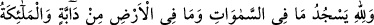
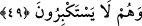
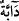
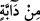

kasdedilen, her şeyin gölgesidir. Akıl sâhibi varlıklar için kullanılan bir sıyga ile
gelmesi, boyun eğmenin onların özelliklerinden olması sebebiyledir. Ya da akıl sâhibi
olanlar da secde edenler cümlesindendir. Dolayısıyla çoğunluğun dikkate alınması
(tağlîb) yoluyla diğerlerini de kapsamaktadır.
Hulâsa gölgeler, güneşin yükselip alçalmasıyla bir taraftan diğer tarafa meylederek
Allah’ın kendisi için takdir ettiği dönme emrine boyun eğerek döner. Durum şu ki, bu
gölgelerin sâhipleri olan cisimler de Allah’ın hükmüne boyun eğmişler ve itâat
etmişlerdir. Onların “küçülmek”le vasfedilmesi, gölgelerinin boyun eğme ile
vasfedilmesine ihtiyaç bırakmamıştır.
Sâbit olan süflî cisimlerin gölgelerinin secdesi ve Allah’a boyun eğişleri anlatıldıktan
sonra, gölgesi olsun veya olmasın Allah’ın irâdesi ile hareket eden mahlûkâtın secdeleri
şöyle anlatılmaya başlanıyor:
49. Göklerde bulunanlar, yerdeki canlılar ve bütün melekler, büyüklük
taslamadan Allah’a secde ederler.
“Göklerde bulunanlar,” güneş, ay ve yıldızlar gibi yükseklerde yaratılanlar; hangi tür
olursa olsun “yerdeki canlılar ve” yüce mertebelerine rağmen “bütün melekler,”
Allah’a secde ve ibâdet etmekten kaçınarak “büyüklük taslamadan” bilakis kendilerini
küçük görerek, müstakil veya toplu olarak başka bir mâbûda değil, sâdece “Allah’a
secde ederler” boyun eğerler.
“__WORD__ kelimesi yeryüzünde olanları açıklamaktadır. Çünkü “Allah her dâbbeyi (ayağı
ile yerde hareket eden canlıyı) sudan yarattı.” (en-Nûr, 24/45) âyeti ‘dâbbe’nin
sâdece yeryüzünde olanlara âid olduğunu gösterir. Çünkü göktekiler doğarak
yaratılmazlar ve yerde hareket etme kâbiliyetleri de yoktur. Onların uçmaya yarayan
kanatları vardır.
Fakir (Bursevî) der ki: Uçmak yerde hareket etmeye ters düşmediği âşikârdır.
Gökyüzünde bazı varlıkların yürüdükleri nakledilmiştir. Onların yürümesi, bildiğimiz
sudan yaratılmasını gerektirmez. Çünkü her canlı sudan yaratılmıştır. Dolayısıyla “
” ifâdesi, hem gökte hem de yerdekileri açıklamış olur. “__WORD__” ism-i mevsûlü de akıllı
varlıklar ve diğerleri için geneldir.
el-Es’iletü’l-mukhime’de der ki: “Akıl sâhibi olmayan mahlûkatın sayısı, akıl sâhibi
olanlara göre daha çoktur. Dolayısıyla bu ifâde, akıl sâhibi olmayanları da içine alır.
Çünkü onlar sayıca daha çoktur.”
Bâzı âyetlerde Cebrâil (a.s.)’ın meleklere atfedilmesi gibi burada da “el-melâike